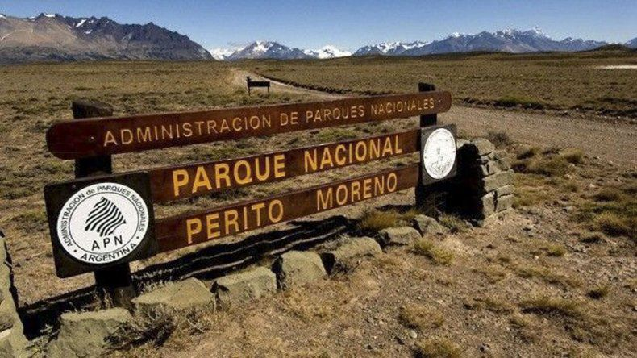

El Parque Nacional Perito Moreno fue creado en 1937 al noroeste de la provincia de Santa Cruz con el objetivo de preservar la fauna, la flora y los restos fósiles encontrados en la región. Con 115000 hectáreas, el parque es de un alto valor científico por el hallazgo de restos paleontológicos y los elementos biológicos que protege. Este parque cuenta con numerosas evidencias del pasado de la región de hace 9700 años atrás. En este entonces vivían allí los antecesores de los tehuelches que se cree que abandonaron el lugar debido al clima extremo.
Mirador Lago Volcán Se accede por el mismo camino que lleva a la seccional El Rincón, a 24 km de la Oficina de Informes Onelli. Desde allí se puede disfrutar de las increíbles vistas del Lago Volcán desde su mirador y acceder al sendero para acercarse al cañadón del Río Volcán, donde se encuentran los restos de la Pasarela Histórica.
Ascenso al Cerro León y La Condorera El Cerro León (1405 m) ofrece lindísimas vistas tanto hacia el norte -Valle del Rio Lácteo y Cerro Volcán- como hacia el sur –el turquesa Lago Belgrano y la Península Belgrano-. Desde este sector también se puede acceder al sendero La Condorera, que conduce a las laderas escarpadas donde se observan nidos de cóndor. Se puede acceder desde el Área de Acampe El Rincón o desde las inmediaciones de La Oriental.
Península Belgrano Estos senderos cruzan el paisaje suavemente ondulado de la Península Belgrano ofreciendo vistas espectaculares del Lago Belgrano y los cerros circundantes. Uno de los aspectos más llamativos de este lago es su singular coloración: en su zona norte recibe agua de ríos que nacen de glaciares, que contiene partículas en suspensión generando un color blanco lechoso. El estacionamiento e inicio de la senda se encuentra a 9 km de la Oficina de Informes Onelli. Existn dos circuitos que comparten el inicio y el final; la diferencia entre ellos es que el recorrido del Circuito Chico atraviesa el centro de la península (prácticamente de Norte a Sur), mientras que el Circuito Grande bordea las márgenes Oeste y Sur de la misma. Dentro de la Península Belgrano hay cuatro refugios, tres de los cuales ofrecen tres sitios de acampe anexos cada uno. El Refugio Caleta Huala se ubica a 800 m del inicio del circuito, el Refugio Archipiélago a 2,9 km, el Refugio Playa Quetro a 7,8 km y, finalmente, el Refugio Dos Bahías se encuentra a 5,7 km del inicio.
Sendero del Valle del Río Lácteo Distancia: 11,5 km Dificultad: Alta Tiempo aproximado: 4 a 5 horas Por el Valle del Rio Lácteo se accede a la base del Cerro San Lorenzo, a su cara vertical de 2000 m. También a la singular Laguna de los Témpanos, que suele contener enormes bloques de hielo provenientes del Glaciar Lácteo. A lo largo del sendero se pueden apreciar un paisaje recientemente moldeado por el retroceso de los glaciares y otras geoformas como abanicos fluviales. El inicio de la senda se encuentra a 20 km de la Oficina de Informes Onelli. Es necesario vadear un arroyo al comienzo de la senda y unos 250 metros más adelante se encuentra el Refugio Gilberto. Al final de este sendero se arriba al Refugio Doug & Kris Tompkins y en sus inmediaciones comienza el sendero a la Laguna de los Témpanos.
Circuito Azara Distancia: 52 km Dificultad: Alta Tiempo aproximado: 3 a 5 días Desde la zona del Mirador Lago Belgrano, en el abierto paisaje de la estepa subandina, este circuito atraviesa el ecotono entre pastizales hasta el bosque de lenga del sector de Azara. A la vez, ofrece extensas vistas a lagos y montañas. Cada tramo del sendero es de dificultad moderada pero el circuito en su totalidad resulta de dificultad alta por su distancia total y el tiempo que requiere su recorrido completo.